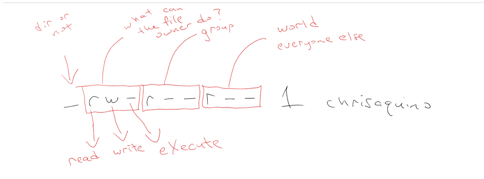

Tips and Tricks
- Typing cd with no arguments will take you to your home directory.
- . is current directory, .. is directory above current directory.
- Typing cd/ will take you to the root directory (your hard drive).
- A / at the end of a filename means the file is a directory.
- The which command will check arguments for executable files on your system.
- The ps command stands for Process Status and will show you what is running in bash.
- The -t argument, when used with ls, will sort files by modified time.
- The -alt arguments, when used with ls, will display all files in long form, sorted by modified time.
- The uptime command will tell you how long it's been since you last rebooted your system.
- Use rm -rf to remove a directory but BE CAREFUL.
- * is the "wildcard" operator, AKA "splat".
- The history command shows all the terminal commands that have been called.
- The pbcopy command puts text on your computers clipboard.
Notes
Absolute paths always start with /, which refers to your computers hard drive.
Moving a file to the /tmp directory is a great way to delete a file without immediately losing it forever.
Use chmod to change read, write, and execute permission on a file.
Permissions
Thanks Chris Aquino!